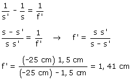

c) Datos: s = -0,25 m, s' = 15 mm (La imagen se forma en la retina) Ecuación del cristalino:  25 cm es la menor distancia a la que se puede enfocar un
objeto (Punto próximo) siendo la distancia focal 1.41 cm. Observa
que el mecanismo de acomodación modifica la distancia focal del
cristalino entre 1.5 cm (Ver el punto del infinito) y 1.41 cm (Ver el
punto próximo) |